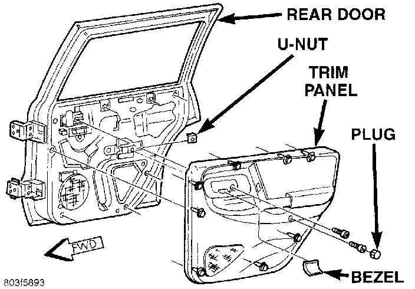
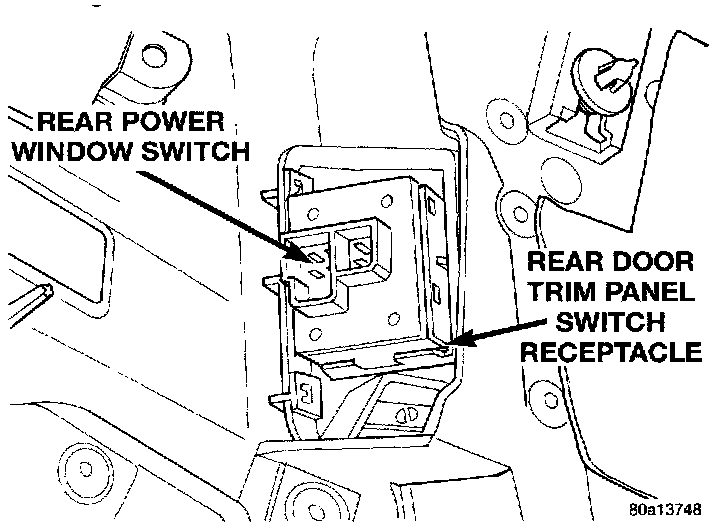

Power Window Switch: Service and Repair
REMOVAL1. Disconnect and isolate the battery negative cable.
2. Remove the bezel near the inside door latch release handle by inserting a straight-bladed screwdriver in the notched end and prying gently upwards.
Rear Door Trim Panel Remove/Install:

3. Remove the door trim panel mounting screw located in the bezel opening near the inside door latch release handle.
4. Remove the trim cap and screw near the rear of the door armrest.
5. Using a wide flat-bladed tool such as a trim stick, pry the trim panel away from the door around the perimeter and remove the trim panel.
NOTE: To aid in the removal of the trim panel, start at the bottom of the panel.
6. Unplug the wire harness connector from the door power window switch.
Rear Door Power Window Switch Remove/Install:

7. Unsnap the switch from the receptacle in the trim panel.
8. Reverse the removal procedures to install.